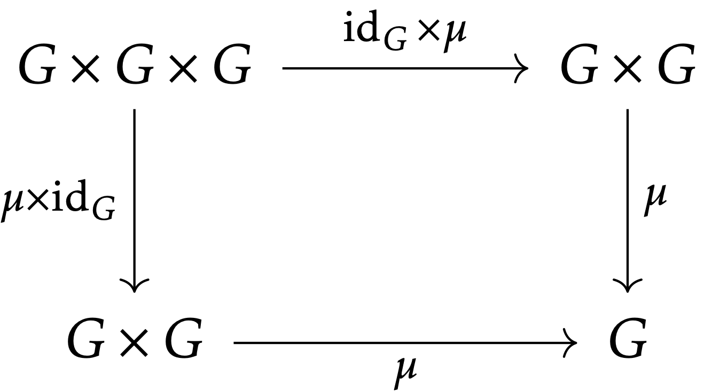
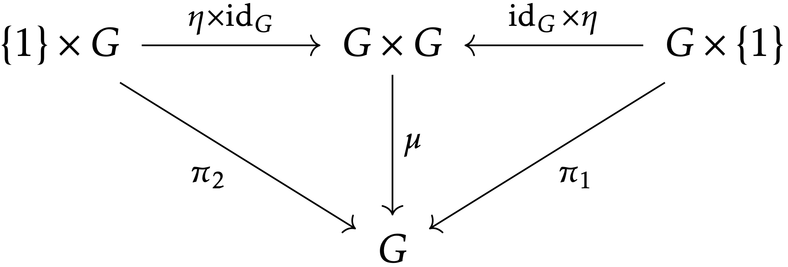
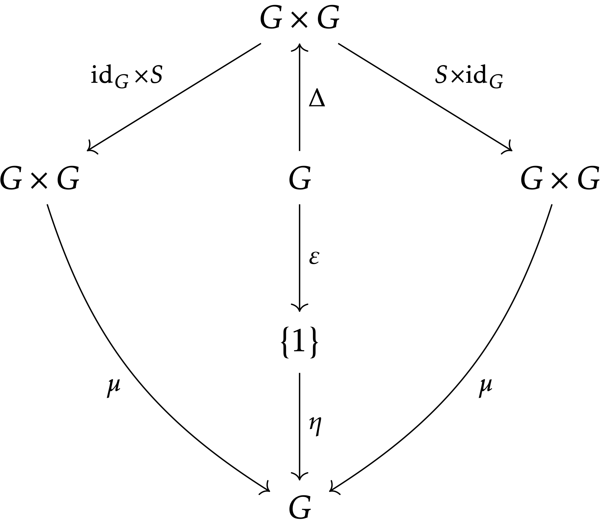
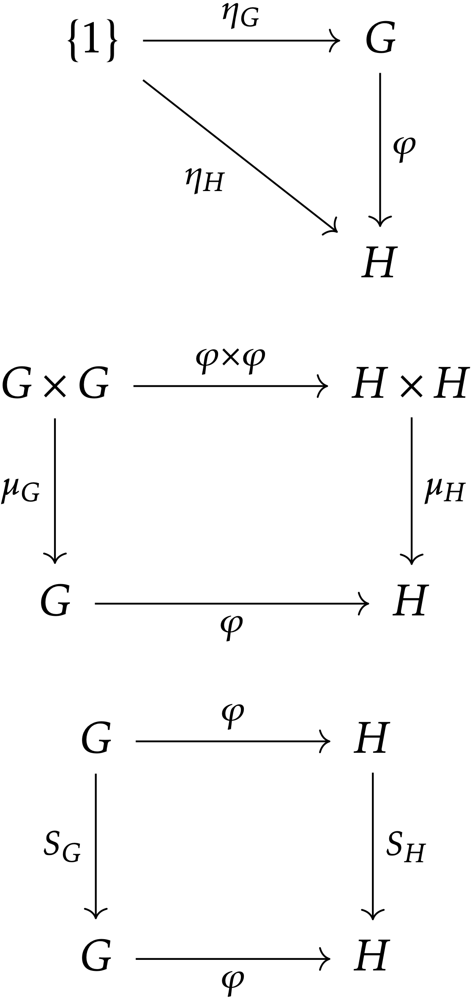
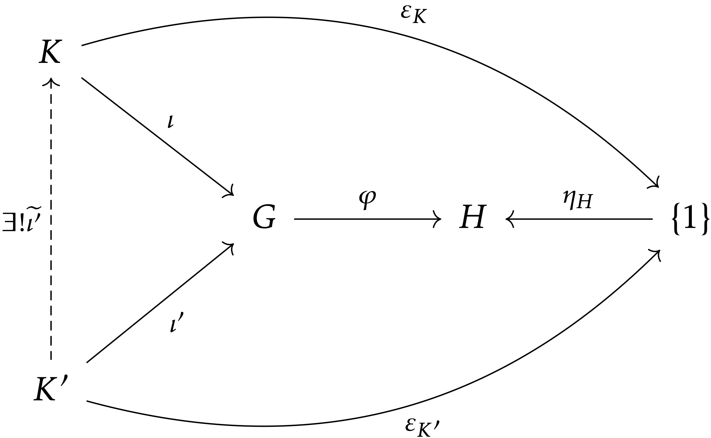
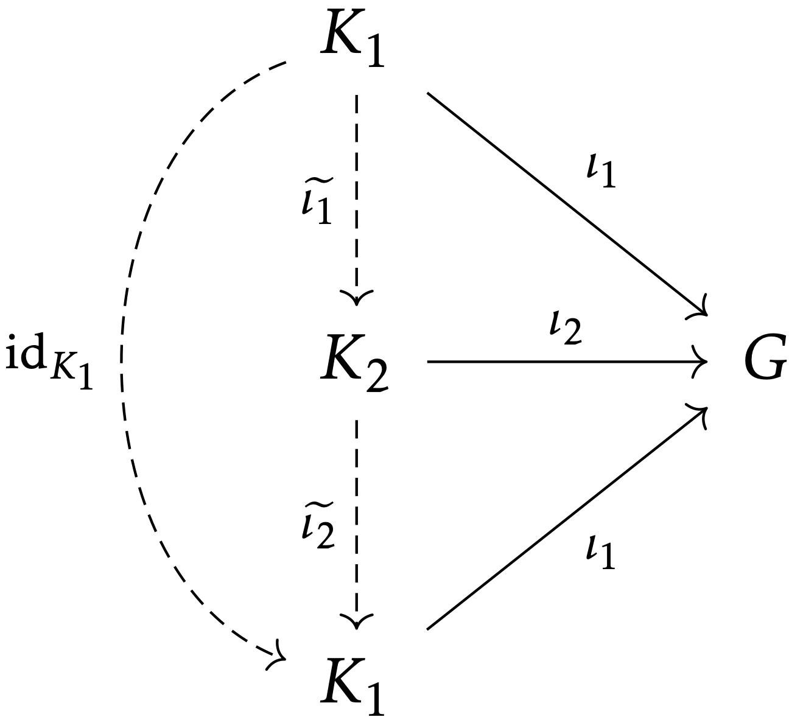

\[ \renewcommand\le\leqslant \newcommand\id{\mathrm{id}} \newcommand\adef{\stackrel{\mathrm{def}}{\Longleftrightarrow}} \newcommand\surj\twoheadrightarrow \newcommand\incl\hookrightarrow \newcommand\gen[1]{\langle #1 \rangle} \newcommand\Set{\mathbf{Set}} \newcommand\Grp{\mathbf{Grp}} \newcommand\Abl{\mathbf{Abl}} \newcommand\op{\mathrm{op}} \newcommand\frk\mathfrak \newcommand\brk[1]{[ #1 ]} \DeclareMathOperator\Ker{Ker} \let\Im\relax \DeclareMathOperator\Im{Im} \DeclareMathOperator\Ab{Ab} \DeclareMathOperator\Coim{Coim} \DeclareMathOperator\Coker{Coker} \DeclareMathOperator\End{End} \]
意見や質問，訂正依頼等は
のいずれかまでお願いします．
これは，日曜数学 Advent Calendar 2018 の9日目の記事です． 昨日は ONEWAN さんの 日曜数学の歩き方でした．
今年は圏論ブームが巻き起こっていたのでそれに（今更）便乗する形になります．圏論はやや抽象度の高い分野ではありますが，群論や線形代数学等の「具体的な」分野を圏論的に見直してみると，意外なほど身近に感じます．ここでは群論だけに焦点を絞って（長い文章ですが）その一端を見ていこうと思います．
まず，群論の記法を思い出しましょう．本稿を理解する上で，ここに書いてあることをすべて知っている必要はないですが，十分に慣れていることを想定しています．
最初は圏論的群論を読み進めて，後で知らない概念や記号が出てきたときに確認する程度でも構いません．
MathJax の処理に時間がかかるため，別のページに用意しています．
圏論では，具体的な元を用いずに，射（写像や群準同型）のみを用いて話を進めます．そこでまずは，群の定義を射のみを用いて書き換えていきましょう．
以下で可換図式がたくさん現れますが，MathJax で使える可換図式のライブラリはやや貧弱なようです．なので LaTeX による綺麗な可換図式を併せて載せています．
\(G\) を群としたときに，その積は，写像 \(\mu \colon G \times G \to G\) であって，結合律を満たすことが要求されます．結合律は次の可換図式で表されます： \[ \begin{CD} G \times G \times G @>\id_G \times \mu>> G \times G \\ @V\mu \times \id_GVV @VV\mu{}V \\ G \times G @>>\mu> G \end{CD} \] 
（ここで，\(G \times G\) や \(\id_G \times \mu\) 等は集合の直積に関する普遍性から出てきます．しかし，そこまで説明すると長くなるので省略します．）
これが積の結合律を表していることは，次の計算で確かめることができます： \[ \begin{align*} \mu \circ (\id_G \times \mu) (f, g, h) &= \mu (f, \mu (g, h)) = \mu (f, g h) = f (g h), \\ \mu \circ (\mu \times \id_G) (f, g, h) &= \mu (\mu (f, g), h) = \mu (f g, h) = (f g) h. \end{align*} \]
次に群の単位元を射で表します．そのために，次の命題が成り立つことに注意します：
\(G\) を群とすると，群準同型 \(\{ 1 \} \to G\) がただ一つ存在する．
この群準同型を \(\eta \colon \{ 1 \} \to G\) とおくと，群準同型の定義から，\(\eta (1) = 1\) であることが分かります．そこで，\(G\) の単位元 \(1 \in G\) と群準同型 \(\eta \colon \{ 1 \} \to G\) を同一視してみましょう．より正確には，次のようなプロセスを経ます：
この同一視を用いて単位元の公理 \(g \cdot 1 = g = 1 \cdot g\) を表すと，\(\mu (g, \eta (1)) = \id_G (g) = \mu (\eta (1), g)\) であることから， \[ \begin{CD} \{ 1 \} \times G @>\eta \times \id_G>> G \times G @<\id_G \times \eta<< G \times \{ 1 \} \\ @V\pi_2VV @VV\mu{}V @VV\pi_1V \\ G @= G @= G \end{CD} \] 
という可換図式を得ます．ここで，\(\pi_1 \colon G \times \{ 1 \} \to G\) や \(\pi_2 \colon \{ 1 \} \times G \to G\) は標準的な射影です．
もしかしたら，「\(\{ 1 \}\) が具体的な元を用いて定義されているから，圏論的でないのではないか」と思う人もいるかもしれません．しかし，\(\{ 1 \}\) は，集合の終対象として，ちゃんと圏論的に特徴づけることができます．
逆元はやや複雑です．逆元を表す写像を \(S \colon G \to G, x \mapsto x^{-1},\) とおき，\(S\) を射によって特徴づけてみます．まず注意してほしいこととして，\(S\) は群準同型ではありません！実際，\(g, h \in G\) を任意に取ってきたときに， \[ \begin{align*} S (g h) &= (g h)^{-1} = h^{-1} g^{-1}, \\ S (g) S (h) &= g^{-1} h^{-1} \end{align*} \] なので，\(G\) が非可換ならば一般に \(S (gh) \neq S (g) S (h)\) です．しかし，この計算から分かるように，\(S \colon G \to G\) は反群準同型です：
群の間の写像 \(\varphi \colon G \to H\) が反群準同型（group anti-homomorphism）であるとは，
となることをいう．
上の命題と双対的なものとして，次の命題も重要です：
\(G\) を群とすると，群準同型 \(G \to \{ 1 \}\) がただ一つ存在する．
この群準同型を \(\varepsilon \colon G \to \{ 1 \}\) と書きましょう．もちろん \(\varepsilon (g) = 1\) です．これを使えば，単位元 \(1 \in G\) を，群準同型 \(\eta \circ \varepsilon \colon G \to G\) によって述べることもできます．
対角写像（diagonal mapping）と呼ばれる群準同型 \(\Delta \colon G \to G \times G, \ g \mapsto (g, g),\) も便利です．
\(\varepsilon \colon G \to \{ 1 \}\) を余単位（counit），\(\Delta \colon G \to G \times G\) を余積（comultiplication）とも呼びます．圏論的には，単位 \(\eta\) や積 \(\mu\) の双対にあたります．
さて，以上の写像 \(S, \mu, \eta, \Delta, \varepsilon\) によって，逆元の公理 \(g \cdot g^{-1} = 1 = g^{-1} \cdot g\) を可換図式で表します： \[ \begin{CD} G \times G @<\Delta<< G @>\Delta>> G \times G \\ @V\id_G \times SVV @VV\eta \circ \varepsilon{}V @VVS \times \id_GV \\ G \times G @>>\mu> G @<<\mu< G \times G \end{CD} \] 
一番左側が \(g \mapsto (g, g) \mapsto (g, g^{-1}) \mapsto g \cdot g^{-1}\) を，真ん中が \(g \mapsto 1 \in \{ 1 \} \mapsto 1 \in G\) を，一番右が \(g \mapsto (g, g) \mapsto (g^{-1}, g) \mapsto g^{-1} \cdot g\) を表しています．
今，逆に，集合 \(G\) と写像 \(\mu \colon G \times G \to G\)，\(\eta \colon \{ 1 \} \to G\)，\(S \colon G \to G\) が与えられて，しかも以下の可換図式を満たすとしましょう： \[ \begin{CD} G \times G \times G @>\id_G \times \mu>> G \times G \\ @V\mu \times \id_GVV @VV\mu{}V \\ G \times G @>>\mu> G \end{CD} \] \[ \begin{CD} \{ 1 \} \times G @>\eta \times \id_G>> G \times G @<\id_G \times \eta<< G \times \{ 1 \} \\ @V\pi_2VV @VV\mu{}V @VV\pi_1V \\ G @= G @= G \end{CD} \] \[ \begin{CD} G \times G @<\Delta<< G @>\Delta>> G \times G \\ @V\id_G \times SVV @VV\eta \circ \varepsilon{}V @VVS \times \id_GV \\ G \times G @>>\mu> G @<<\mu< G \times G \end{CD} \]
ここで，写像 \(\Delta \colon G \to G \times G, \ g \mapsto (g, g)\) と \(\varepsilon \colon G \to \{ 1 \}\) は，一般の集合に対して定義できる写像です．
このとき，\(G\) 上の積を \(g \cdot h := \mu (g, h)\) と定めれば，\(G\) は \(\eta (1)\) を単位元とし，\(g \in G\) の逆元が \(S (g)\) であるような群となることが分かります．（写像 \(\eta \colon \{ 1 \} \to G\) の存在から，特に \(G \neq \emptyset\) も言えます．）従って，上の可換図式を満たすような集合 \(G\) と写像 \(\mu \colon G \times G \to G\)，\(\eta \colon \{ 1 \} \to G\)，\(S \colon G \to G\) のペアのことを群と呼んでも問題なさそうです．
以上で，群を射のみによって定義することができました．
続いて，準同型を圏論的に定式化しましょう．
\((G, \mu_G, \eta_G, S_G)\) と \((H, \mu_H, \eta_H, S_H)\) を群とする．写像 \(\varphi \colon G \to H\) が群準同型（group homomorphism）であるための必要十分条件は，
となることである．

準同型 \(\varphi \colon G \to H\) の核 \(\Ker (\varphi)\) を圏論的に定式化するために，準同型の核についてもう少し詳しく考えてみましょう．今， \[ \begin{align*} g \in \Ker (\varphi) &\adef \varphi (g) = 1 \\ &\Longleftrightarrow \varphi (g) = \eta \circ \varepsilon (g) \end{align*} \] なので，
と表すことができます．ここで，\(|_S\) というのは，写像の \(S\) への制限（restriction）を表します．これでめでたく，\(\Ker (\varphi)\) の定義から元（elements）の記述を消すことができました！しかし，この「最大」というのはあまり扱いやすくありません．
\(G\) の部分集合 \(S, T \subset G\) について，\(S \subset T\) であることと，包含写像（inclusion）\(\iota \colon S \incl T\) が存在することは同値です．従って，
と言えます．これをもう少し進めて，次のように \(\Ker (\varphi)\) を特徴づけます：
群の間の群準同型 \(\varphi \colon G \to H\) が与えられたとき，次の条件を満たす群 \(K\) と群準同型 \(\iota \colon K \to G\) のペアが同型を除いて一意に存在する：

核 \(\Ker (\varphi)\) と包含写像 \(\iota \colon \Ker (\varphi) \incl G\) のペアは，この定理の \((K, \iota)\) の条件を満たすので，これにより核を（同型を除いて）決定することができます．そこで，この定理を核の普遍性（universal property of kernels）といいます．
具体的な元を一切使わずに，射のみによって核を定義することは，非常に素晴らしいことです！核があれば，正規部分群も定義できます．（\(\Ker (\varphi)\) は \(G\) の正規部分群であり，正規部分群はある準同型の核になっている．）そうすると剰余群もまた定義することができます．余裕のある人は確かめてほしいのですが，群論だけでなく，環やベクトル空間，位相空間等でもまったく同じ話が成り立ちます．そこでは，正規部分群と（両側）イデアル，線形部分空間が同じ役割を担っていることを見るでしょう．圏論による抽象化の威力の一旦を垣間見ます．
さて，最初なので普遍性を証明してみましょう．この手の主張の証明は，ほとんどの場合，「（少なくとも一つ）存在すること」と「（存在すれば）高々一つであること」の二つを独立に示します．
存在性
\((\Ker (\varphi), \iota \colon \Ker (\varphi) \incl G)\) が条件を満たすことを見る．群 \(K'\) と群準同型 \(\iota' \colon K' \to G\) であって，\(\varphi \circ \iota' = \eta_H \circ \varepsilon_{K'}\) なるものを任意に取る．各 \(g' \in K'\) に対して \(\iota' (g') = \eta_H \circ \varepsilon_{K'} (g') = 1\) より，\(\iota' (g') \in \Ker (\varphi)\)．よって，\(\widetilde{\iota'} \colon K' \to \Ker (\varphi)\) を，\(\widetilde{\iota'} (g') := \iota (g) \in \Ker (\varphi)\) で定義すれば，\(\widetilde{\iota'} \colon K' \to \Ker (\varphi)\) は群準同型で \(\iota' = \iota \circ \widetilde{\iota'}\) となる．
さらに，\(\iota' = \iota \circ \psi\) なる群準同型 \(\psi \colon K' \to \Ker (\varphi)\) がもう一つあったする．\(\widetilde{\iota'} = \psi\) を示したいが，任意の \(g' \in K'\) に対して， \[ \begin{align*} \psi (g') &= \iota \circ \psi (g') &\quad& \text{（$\psi (g') \in \Ker (\varphi)$ だから）} \\ &= \iota \circ \widetilde{\iota'} (g') &\quad& \text{（$\iota \circ \psi = \iota' = \iota \circ \widetilde{\iota'}$ だから）} \\ &= \widetilde{\iota'} (g') &\quad& \text{（$\widetilde{\iota'} (g') \in \Ker (\varphi)$ だから）} \end{align*} \] となるから，\(\psi = \widetilde{\iota'}\)．
以上より，\((\Ker (\varphi), \iota)\) が条件を満たすことが分かった．
一意性
\((K_1, \iota_1), (K_2, \iota_2)\) を，ともに条件を満たす群と群準同型のペアとする．このとき，\(\varphi \circ \iota_2 = \eta_H \circ \varepsilon_{K_2}\) であるから，\(K_1\) の普遍性より，ある群準同型 \(\widetilde{\iota_2} \colon K_2 \to K_1\) が存在して，\(\iota_2 = \iota_1 \circ \widetilde{\iota_2}\) とできる．同様に，\(K_2\) の普遍性から，ある群準同型 \(\widetilde{\iota_1} \colon K_1 \to K_2\) が存在して，\(\iota_1 = \iota_2 \circ \widetilde{\iota_1}\) とできる．このとき，\(\widetilde{\iota_2} \circ \widetilde{\iota_1} \colon K \to K\) は群準同型であり， \[ \begin{align*} \iota_1 \circ (\widetilde{\iota_2} \circ \widetilde{\iota_1}) = (\iota_1 \circ \widetilde{\iota_2}) \circ \widetilde{\iota_1} = \iota_2 \circ \widetilde{\iota_1} = \iota_1 \end{align*} \] が成り立つ．一方，恒等写像 \(\id_{K_1} \colon K_1 \to K_1\) もまた群準同型であって \(\iota_1 \circ \id_{K_1} = \iota_1\) を満たす．よって，再び \(K_1\) の普遍性より，\(\widetilde{\iota_2} \circ \widetilde{\iota_1} = \id_{K_1}\) を得る．\(K_1\) と \(K_2\) を入れ替えて同じ議論をすることで，\(\widetilde{\iota_1} \circ \widetilde{\iota_2} = \id_{K_2}\) を得る．すなわち，\(K_1 \cong K_2\)．

MathJax の処理による負担を軽減するため，こちらに書いています．
できるだけ群論の基礎に絞ったつもりですが，self-contained になるように努めたのでかなり長くなってしまいました．それにもかかわらず，自分の感じた圏論の魅力はその一端しか伝えることができなかったと思います．やはり他の分野の色々な概念を圏論的に定式化して初めてその強力さを知るのでしょう．
いずれにせよ，群論でさえもこれほどまでに多くの圏論的事項が現れるのは，個人的にすごく感動したことです．その氷山の一角をぜひ理解してほしいです．
明日は puit5781 さんです．
長い記事ですが，ここまでありがとうございました．